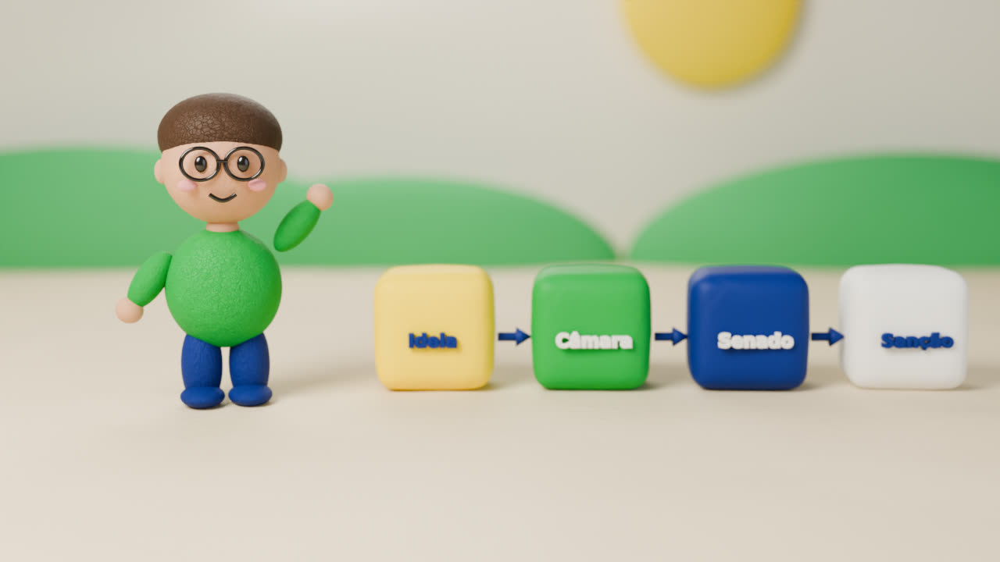

Brasil orgânico
Cores da bandeira, formas que parecem feitas à mão e uma linguagem simples. O mesmo sistema vale para o site e para os vídeos em massinha.
Cores
Tipografia
Nunito 900, títulos
Nunito 800, subtítulos e botões
Nunito 400, texto corrido. Arredondada, amigável e fácil de ler no celular.
Texto suave, para notas e legendas.
Formas
Componentes
Use para agrupar uma ideia. A base azul clara embaixo imita massinha apoiada na mesa.
Animação em massinha
Os vídeos são stop motion de verdade, feitos no Blender: um cenário de mesa e o boneco do Gabriel em massinha, montados por scripts Python com as mesmas cores deste sistema. A animação roda a 12 quadros por segundo, "em dois", com o tremido leve das mãos do animador.

Os scripts ficam em videos/blender/.
Como usar
<link rel="stylesheet" href="/design-system/tokens.css">
<link rel="stylesheet" href="/design-system/componentes.css">
Regra única: use sempre as variáveis de tokens.css. Se precisar de uma cor ou forma nova, adicione lá primeiro.